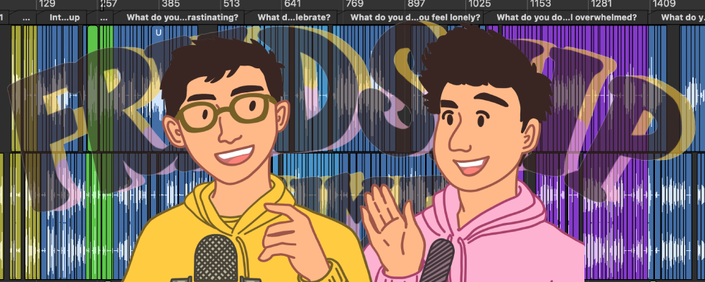
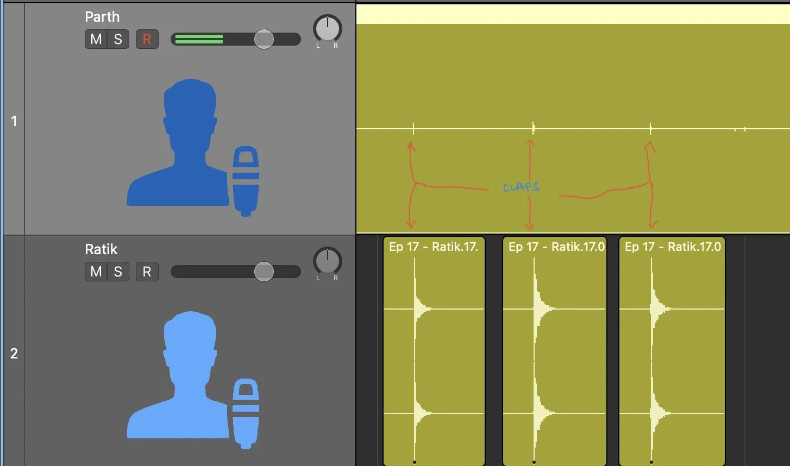
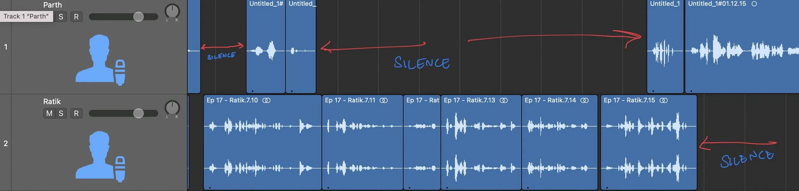
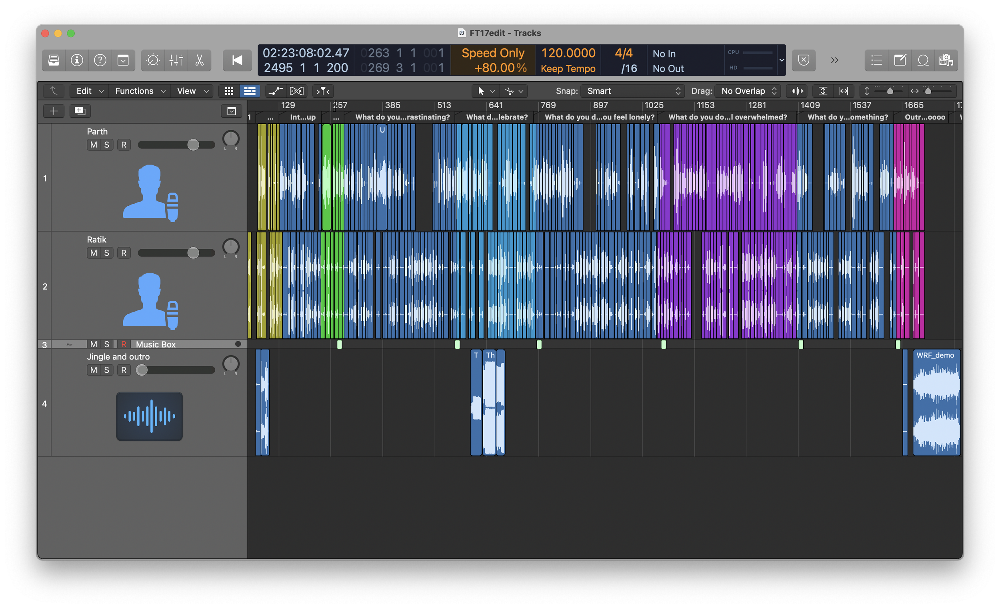
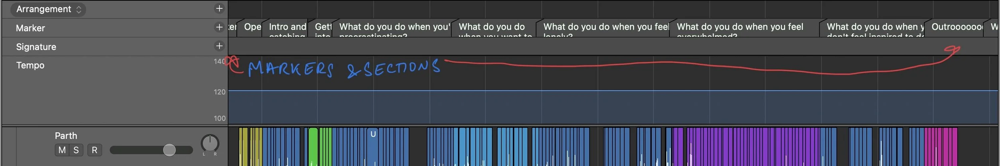
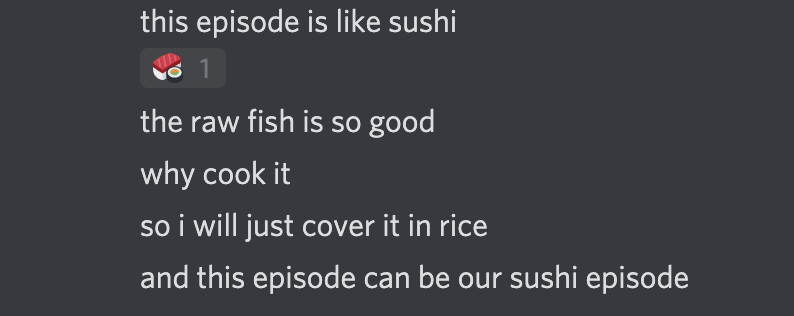

How I Edit Podcast Episodes

Article Body
I help produce a weekly podcast, and we have released about 19 total episodes. My podcast editing process has slowly developed and now I feel quick and comfortable editing up an episode in 1.5-2.5 hours as opposed to the 4-5 hours it used to take me in the beginning. This workflow is also far less frustrating and the end result is much better.
This post outlines my current editing process, take from it what you will!
Some background:
- I use Logic Pro X, but this workflow is adaptable to any audio editing software you wish to use.
- Here is the starting point: Ratik and I record individual tracks on our ends and send them to each other…
…and the edit begins. Let’s go over it step-by-step and look at some tips and tricks I use.
Step-by-step process
TLDR: Sync up the individual tracks, cut silences, listen through and split the episode into sections, clean up the sections, add the finishing touches, and you’re done.
1. Syncing
There are 2 main tracks (one for me, one for Ratik). In order to sync them up, we simply record some claps to both the tracks and use that to sync them up. Easy.

2. Cut silences
Each track has silent portions (for example, when I am talking, Ratik’s track is silent).
Even though it looks like there is no audio in flat waveforms, there is always some undesirable room noise, and it’s probably best to get rid of these sections from the track. Logic has a wonderful little tool for silence removal that I use all the time. You can do this step manually, but almost every audio editor will have some tool to help you do this. The default shortcut for removing silences from a track is Ctrl-X.
That’s preprocessing done! Let’s start cutting.

3. Listen through and split into sections
I like to listen through the entire episode and use markers to split the episode into logical (pun unintended) sections. This way, I can work on small sections at a time without getting overwhelmed, and I’m able to see if there are any glaring flow issues.
Here’s some things to keep in mind:
- Listening through the entire episode can be slow, so increase the playback speed! I use Varispeed to do this. More on this in the ‘tips’ section.
- Once the sections are split up, I color each of them differently so I always have a visual indication of how much of the section I still have to edit. Here’s an example:

4. Clean up sections
Now that the episode is split up, I jump into each section and ‘clean it up’. This involves removing any unwanted material, cutting out any misspeaks, and if required, making things a little more ‘snappy’. A lot of this is by feel. You will develop your own feel the more you edit.
This part of the process is the longest. Depending on how the recording session was, this can be easy or a bit of a chore. More on this later too.

5. Finishing touches: audio FX, theme tune, outro
Almost done. Before the episode can be shipped, I add in the intro jingle and outro music. Each track also gets a chain of FX (or plug-ins, whatever you want to call them) to make the audio sound extra crispy.
And that’s it! A fully edited episode. Time to export and upload.

Additional Tips and Tricks:
Varispeed
Varispeed is a Logic tool that allows you to playback your project at higher (or lower) speeds. Very useful when listening through. I listen through the raw episode at 2x speed and keep it there when cleaning up my sections. A lifesaver. Your DAW likely has a similar tool.
Templated projects
In step 5 above, I spoke about adding in the jingle and channel FX. These are repeated and the same for every episode, so I simply made a templated project file with the individual channel settings applied and the jingle already in there. Why do more work when fewer work do trick?
Keyboard shortcuts
My favorite part. Learning how to move around Logic and use your most used features using shortcuts will change your life. Here are some of the main keyboard shortcuts I use:
- Zoom and movement — Zooming into your timeline horizontally and vertically is something you will do all the time. Moving horizontally is also something you will do all the time. These are baked in by default.
- Varispeed: turning on and off — There isn’t a default shortcut for this, but I added one in.
- Go to next/previous marker — Again, a custom shortcut. I use this to jump between markers while editing. I am speed.
Chapters
Shoutout to Ratik for this one. Podcasts can be long and having ‘chapters’ really helps make a long episode more digestable. Here’s an example of the chapters in episode 17 of Frndship Time.
This is how I add chapters to each episode. You’re adding markers anyway, might as well take the small additional step and finish the job.
Some notes on recording
Like anything else, the better your input material is, the easier it is to have a great end product. If your raw recording session was good, you need very little work to make a great episode. The editing process becomes much shorter and simpler. I call these episodes ‘sushi episodes’.
Thanks for reading! If you have any questions, suggestions, or tips, let me know! See you later.
See you next week for a new post.
Thanks for reading! You can always email me to chat about this post - or anything else.
As is true for any advice or counsel you ever receive: Y.M.M.V! Your mileage may vary. Some advice can be a vice. Feel free to take what you can use, and leave the rest. There are no rules.